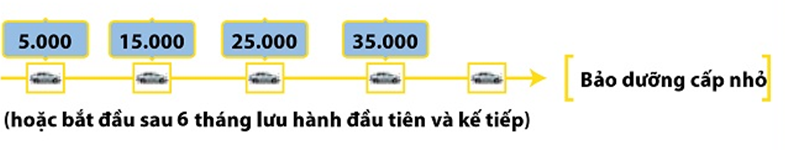
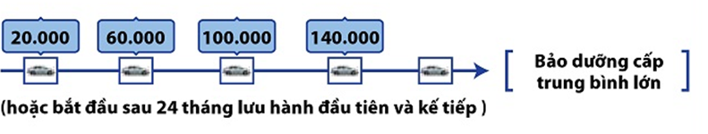
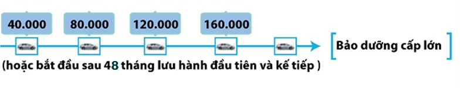
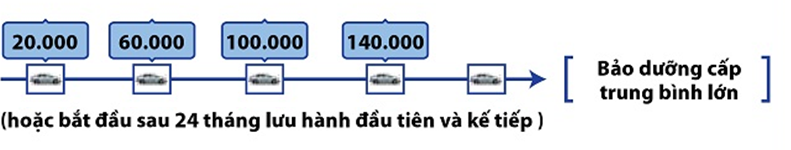
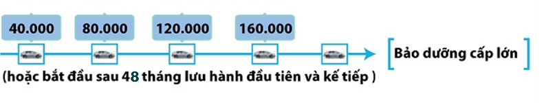
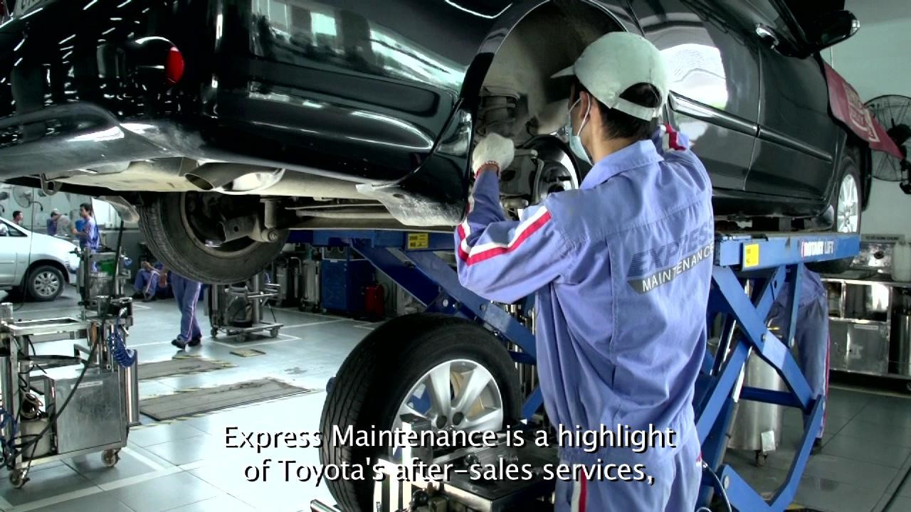
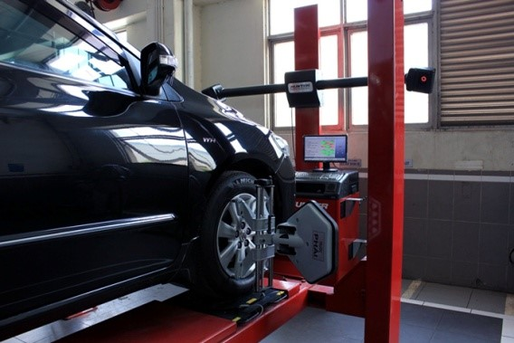

Chính sách bảo hành
Dịch vụ bảo dưỡng
Trong quá trình vận hành, nhiều chi tiết trên xe bị mài mòn hoặc hư hỏng theo thời gian sử dụng. Điều này xảy ra với bất kỳ cơ cấu máy móc nào.
Do đó, bạn cần mang xe đi kiểm tra, bảo dưỡng một cách định kỳ để đảm bảo từng chi tiết cấu thành nói riêng và tổng thể chiếc xe nói chung luôn được vận hành tốt.

Dựa trên quá trình nghiên cứu các đặc tính và điều kiện sử dụng xe tại Việt Nam, Công ty ô tô Toyota Việt Nam đã xây dựng nên tiêu chuẩn về bảo dưỡng định kỳ cho mỗi loại xe mà chúng tôi sản xuất
Theo đó, bảo dưỡng định kỳ cần thực hiện sau mỗi “5.000 Km hoặc 06 tháng, tùy điều kiện nào đến trước”.
Các cấp bảo dưỡng và nội dung của từng cấp:
 



Để được tư vấn chi tiết về nội dung kiểm tra, bảo dưỡng định kỳ, xin liên hệ với các Đại lý chính hãng của Toyota Việt Nam trên toàn quốc.
Với trang thiết bị chuyên dụng và quy trình bảo dưỡng 2-3 kỹ thuật viên chuyên nghiệp, Bảo Dưỡng Nhanh sẽ giúp Quý khách hàng hài lòng hơn khi tổng thời gian chờ đợi trại trạm dịch vụ giảm xuống chỉ còn 60 phút (tính từ khi Quý khách ký lệnh sửa chữa bàn giao xe cho đến khi được thông báo xe sẵn sàng giao), trong khi quy trình bảo dưỡng thông thường mất 2-3 tiếng.
Giàn lạnh là một thành phần của cụm điều hòa, không khí sau khi đi qua giàn lạnh sẽ được làm mát và tỏa vào trong xe. Sau thời gian dài sử dụng, bụi bẩn và hơi ẩm tích tụ trên bề mặt giàn lạnh làm giảm hiệu quả làm mát của điều hòa, phát sinh nấm mốc và vi khuẩn có hại cho hô hấp của người sử dụng. Toyota khuyến nghị cần định kỳ vệ sinh giàn lạnh kể từ 30.000km và sau mỗi 20.000 Km (1 lần/năm) để duy trì không khí trong lành cho xe.
Tuy nhiên hiện nay, việc vệ sinh giàn lạnh điều hòa là công việc rất khó khăn và phức tạp vì nó nằm sâu trong bảng táp-lô. Phương pháp truyền thống hay được sử dụng để vệ sinh giàn lạnh phải tháo dỡ toàn bộ bảng táp-lô cùng nhiều chi tiết với thời gian kéo dài từ 4 đến 6 tiếng.
Dịch vụ vệ sinh giàn lạnh điều hòa chính hãng Toyota, sử dụng Máy vệ sinh tự động với thiết bị chuyên biệt có thể làm sạch tận bên trong giàn lạnh mà không cần tháo dỡ táp lô với thời gian cho một lần dịch vụ chỉ 1 tiếng đồng hồ. Dịch vụ này cũng sử dụng dung dịch làm sạch giàn lạnh chính hãng Toyota, hoàn toàn an toàn cho kết cấu bề mặt giàn lạnh cũng như sức khỏe con người. Sau khi thực hiện, khách hàng có thể kiểm nghiệm hiệu quả làm sạch do thiết bị có thể chụp ảnh so sánh giàn lạnh trước và sau khi làm sạch. Công nghệ vệ sinh giàn lạnh tiên tiến này đã được chứng nhận bởi Tập đoàn Toyota Nhật Bản (TMC) và đã áp dụng ở nhiều nước trong khu vực như Thái Lan, Đài Loan, Singapore, Hồng Kông, Philippines ...
Dịch vụ sửa chữa
Ngoài dịch vụ bảo dưỡng và sửa chữa những hiện tượng bất thường trên xe, Toyota cũng cung cấp dịch vụ sửa chữa đối với những hư hỏng do va chạm mà chiếc xe của bạn gặp phải trong quá trình sử dụng. Dịch vụ đó được gọi là Sửa chữa Thân xe và Sơn.
Với kỹ thuật sửa chữa theo tiêu chuẩn toàn cầu, trang thiết bị, vật tư vật chất lượng cao (được chỉ định bởi Toyota Nhật Bản), các Đại Lý của Toyota sẽ phục hồi hình dạng cũng như diện mạo lớp sơn trên chiếc xe của bạn về điều kiện ban đầu.
Quy trình sửa chữa thân xe và sơn

1. Kéo nắn

2. Gò tấm
3. Bả matit
4. Sơn lót

5.Sơn màu

6. Đánh bóng
Ngoài ra, nhằm đảm bảo chất lượng và rút ngắn thời gian sửa chữa, chúng tôi xây dựng và áp dụng quy trình quản lý chất lượng trong từng công đoạn, quy trình sửa chữa vết xước trong 4 giờ...để không ngừng đem đến sự hài lòng cho khách hàng đối với dịch vụ sửa chữa Thân xe và Sơn của Toyota.
Để được tư vấn chi tiết về nội dung sừa chữa, xin liên hệ với các Đại lý chính hãng của Toyota Việt Nam trên toàn quốc.
Tự hào là doanh nghiệp dẫn đầu trên thị trường về dịch vụ sau bán hàng trong nhiều năm liên tiếp và được khách hàng đánh giá cao trong việc luôn tiên phong áp dụng những công nghệ mới cũng như thực hiện các chương trình hậu mãi, Công ty ô tô Toyota Việt Nam (TMV) luôn không ngừng nỗ lực phấn đấu để giành được sự tin yêu của các Quý khách hàng bằng các hoạt đông cụ thể.
Cơ sở vật chất, trang thiết bị hiện đại theo tiêu chuẩn Toyota: Các đại lý chính hãng của Toyota đều được xây dựng với cơ sở vật chất hiện đại, trang bị tiện nghi và thiết bị dụng cụ chuyên dụng, được thiết kế đặc biệt dành riêng cho việc bảo dưỡng và sửa chữa xe Toyota với chất lượng cao nhất và trong thời gian ngắn nhất.
Nguồn nhân lực chuyên nghiệp: Với đội ngũ CVDV, Kỹ thuật viên được đào tạo về kiến thức và kỹ năng theo hệ thống Đào tạo bài bản và chuyên nghiệp của Toyota (TEAM), Khách hàng sẽ hoàn toàn yên tâm khi chiếc xe được chăm sóc tại các Đại lý Toyota chính hãng.

Quy trình hoạt động Dịch vụ tiêu chuẩn: Các Đại lý Toyota đều áp dụng một quy trình hoạt động dịch vụ tiêu chuẩn toàn cầu, lấy khách hàng làm trung tâm. Trong đó, quy trình dịch vụ được thực hiện từ khâu nhắc & mời khách hàng đưa xe đến làm bảo dưỡng, đến khâu chuẩn bị, tiếp đón khách hàng, sửa chữa, giao xe và liên hệ sau sửa chữa.

Phụ tùng chính hiệu: Tất cả các phụ tùng bảo dưỡng, sửa chữa chính hãng, nhập khẩu từ Thái Lan, Nhật Bản và các nước trong khu vực, luôn sẵn sàng đáp ứng nhu cầu của Khách hàng nhanh nhất và chất lượng tốt nhất.

Với mục tiêu luôn luôn cải thiện, nâng cao chất lượng, mong muốn mang đến cho mỗi khách hàng đang sở hữu chiếc xe Toyota sự hài lòng cao nhất.